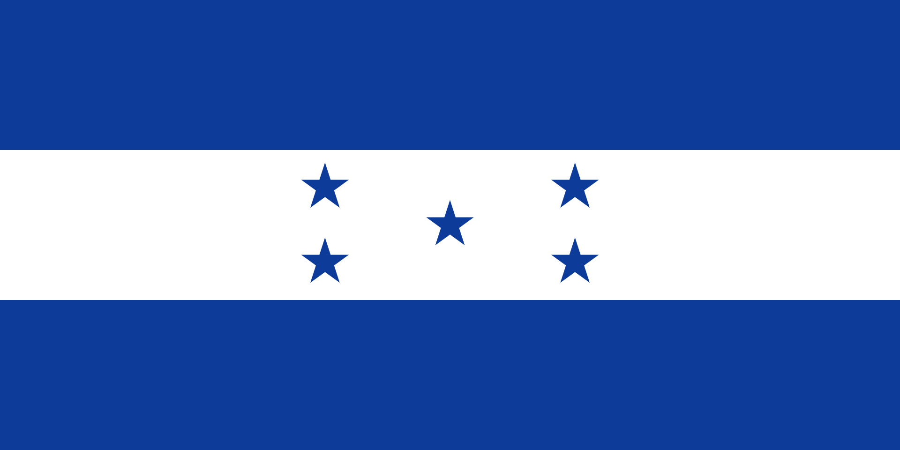

Josue D. Maldonado
About Me
My name is Josue. I was born in San Pedro Sula, Honduras, but I moved to Salt Lake City about five years ago. I am currently studying Software Development. I also work as a manager for a company that sells automotive paint and body shop supplies. In my free time, I love playing soccer with my friends and watching football matches.
San Pedro Sula, Honduras

Honduras is a vibrant country located in the heart of Central America. It is famous for its rich history, including the ancient Mayan ruins of Copán, and its stunning natural beauty, such as the Bay Islands and its lush rainforests. The country is a top producer of high-quality coffee and is known for the warmth and hospitality of its people.